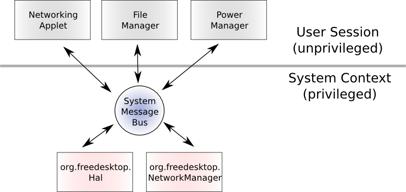

| PolicyKit Library Reference Manual |
|---|
PolicyKit assumes a model where a program is split into two parts. One part, the Mechanism, runs privileged (with no user interface elements) and the other part, the policy agent, runs unprivileged. The two parts of the program are in different processes and communicate through some IPC mechanism such as pipes or the system message bus (D-Bus). In some instances the Mechanism can be considered part of the core OS and the policy agent part of the desktop stack.
A Mechanism should never trust any application that tries to use; it needs to carefully verify all data and requests passed to it from the application. This is the model employed by HAL and NetworkManager:

This model is not by any means restricted to applications using
D-Bus; it applies to most other security sensitive
applications. For example, the PAM module for checking your
password can run unprivileged and uses a simple and easy to
audit privileged helper
application, /sbin/unix_chkpwd on Red Hat
systems, to actually check the password
against /etc/shadow. In a similar fashion,
all
setuid
root applications carefully check (or at least
should) incoming parameters and the environment in which
they are launched.
In general, such an architecture is thought of as secure as long as the Mechanism (and it's dependent libraries) have been verified to be secure.